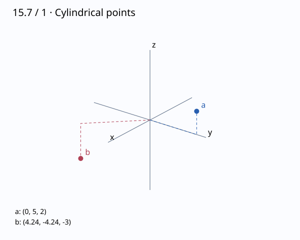

문제 요약
원주좌표 점을 표시하고 직교좌표로 바꾸어라: (a) \(\left( 5, \ \frac{\pi}{2}, \ 2\right)\), (b) \(\left( 6, \ - \frac{\pi}{4}, \ -3\right)\)

힌트. \(x=r\cos\theta,y=r\sin\theta\)이며 z는 그대로이다. 각도의 사분면을 확인한다.
해설.
(a) \[(x,y,z)=(r\cos\theta,r\sin\theta,z)=\left( 0, \ 5, \ 2\right)\]
xy-평면에서 원점으로부터 \(5\) 떨어진 점을 각도 \(\frac{\pi}{2}\) 방향으로 잡고, 높이 \(2\)로 옮긴다.
(b) \[(x,y,z)=(r\cos\theta,r\sin\theta,z)=\left( 3 \sqrt{2}, \ - 3 \sqrt{2}, \ -3\right)\]
xy-평면에서 원점으로부터 \(6\) 떨어진 점을 각도 \(- \frac{\pi}{4}\) 방향으로 잡고, 높이 \(-3\)로 옮긴다.
최종 답. \[(a)\ \left( 0, \ 5, \ 2\right),\quad(b)\ \left( 3 \sqrt{2}, \ - 3 \sqrt{2}, \ -3\right)\]
검산·주의점. 두 변환을 연이어 적용하면 원래 점으로 돌아온다. 각도는 \(2\pi\)의 정수배 차이까지 동치이다.
Problem summary
Plot the cylindrical-coordinate points and find their rectangular coordinates: (a) \(\left( 5, \ \frac{\pi}{2}, \ 2\right)\), (b) \(\left( 6, \ - \frac{\pi}{4}, \ -3\right)\)
Hint. Use \(x=r\cos\theta,y=r\sin\theta\); z is unchanged. Check the angle quadrant.
Solution.
(a) \[(x,y,z)=(r\cos\theta,r\sin\theta,z)=\left( 0, \ 5, \ 2\right)\]
In the xy-plane, move a distance \(5\) from the origin at angle \(\frac{\pi}{2}\), then move to height \(2\).
(b) \[(x,y,z)=(r\cos\theta,r\sin\theta,z)=\left( 3 \sqrt{2}, \ - 3 \sqrt{2}, \ -3\right)\]
In the xy-plane, move a distance \(6\) from the origin at angle \(- \frac{\pi}{4}\), then move to height \(-3\).
Final answer. \[(a)\ \left( 0, \ 5, \ 2\right),\quad(b)\ \left( 3 \sqrt{2}, \ - 3 \sqrt{2}, \ -3\right)\]
Check and conditions. Applying the inverse conversion recovers the original points. Angles differing by integer multiples of \(2\pi\) are equivalent.